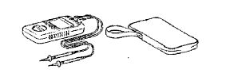
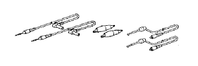

MẶT VÔ LĂNG > HUỶ > Chuẩn bị

| 09082-00700 | Dụng cụ huỷ túi khí SRS | |
| 09082-00780 | Dây điện dùng huỷ túi khí Dây điện phụ No.6 | |
| 09082-00802 | Dây điện dùng huỷ túi khí Dây điện phụ No.8 | |
| (09082-10801) | Dây A | |
| (09082-30801) | Dây điện C |
 | 09042-00010 | Chìa vặn đầu hoa khế T30 | - |
|  | 09082-00040 | Đồng hồ đo điện Toyota | - |
|  | (09083-00150) | Bộ dây đo | - |
- GỢI Ý:
- "Torx" là biểu tượng đăng ký chất lượng của viện Textron
| Bu lông Chiều dài: 35.0 mm (1.378 in.) Bước ren: 1.0 mm (0.039 in.) Đường kính: 6.0 mm (0.236 in.) | Huỷ túi khí |
| Túi ni lông | Huỷ túi khí |
| Lốp Chiều rộng: 185 mm (7.28 in.) Đường kính trong: 360 mm (14.17 in.) | Huỷ túi khí |
| Lốp có vành xe Chiều rộng: 185 mm (7.28 in.) Đường kính trong: 360 mm (14.17 in.) | Huỷ túi khí |
| Cờlê cân lực | - |